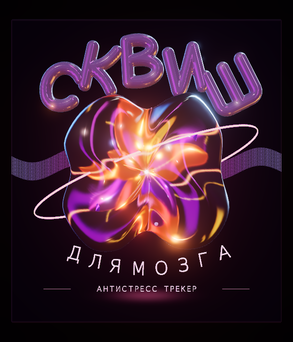
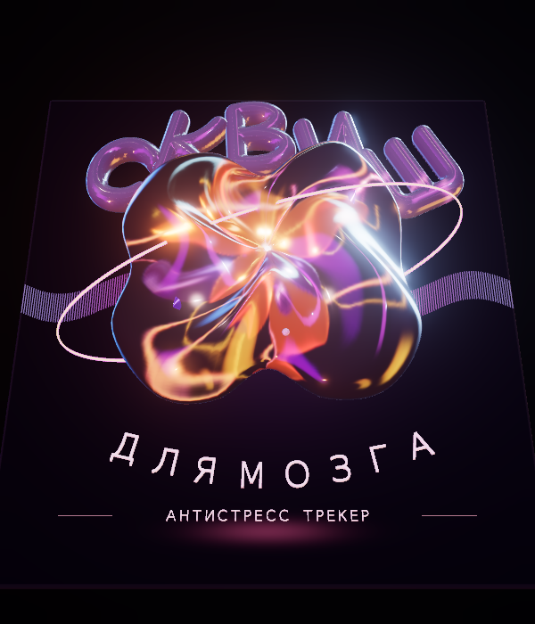
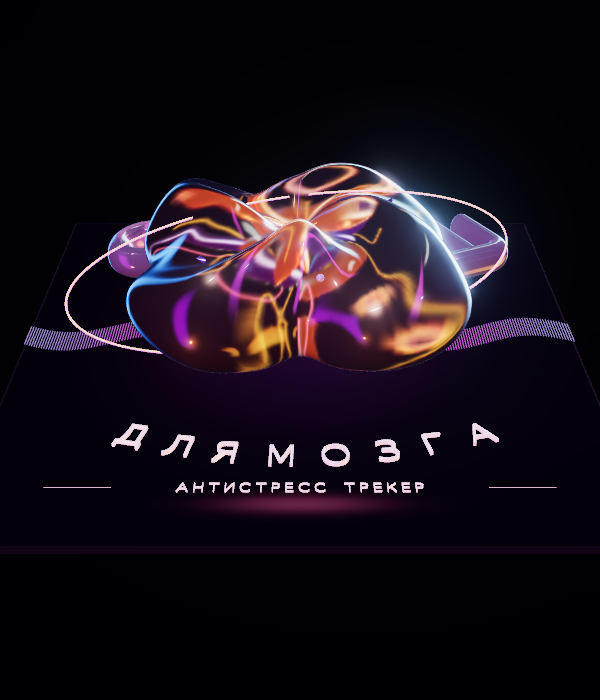
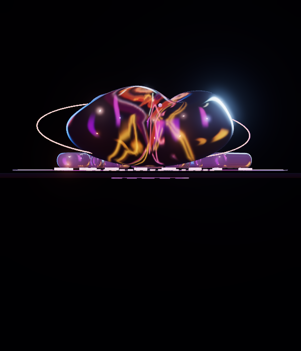
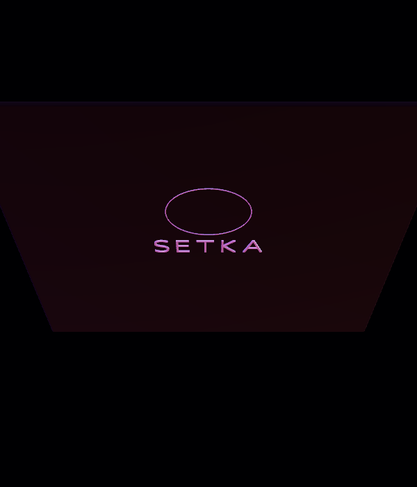
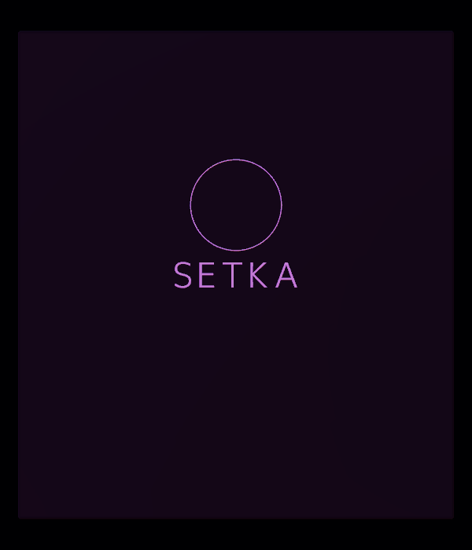
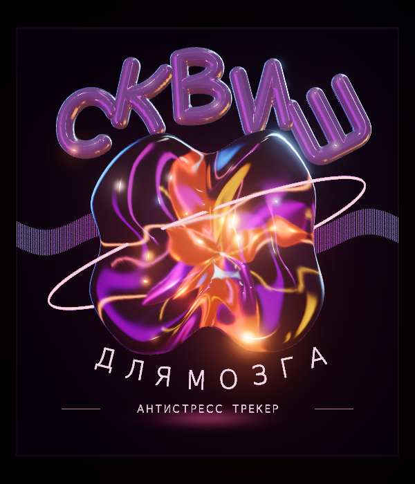
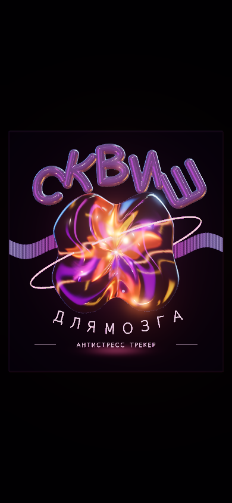

Кадры настоящей WebGL-сцены в WebKit: поверхность, буквы, цветок и орбита — трёхмерная геометрия. Изображения здесь служат отчётом о проверке. Интерактивный прототип открывается отдельно.








25 ноября 2026. Это автоматическая проверка движка WebKit, а не испытание на физическом iPhone. Основная SETKA и «Золотой мёд» не изменены.